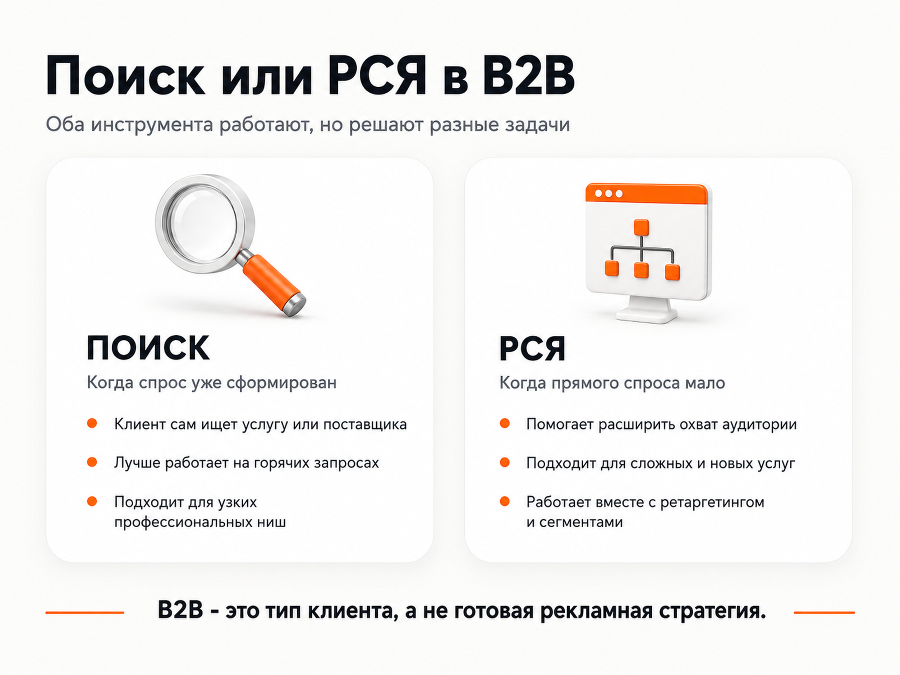
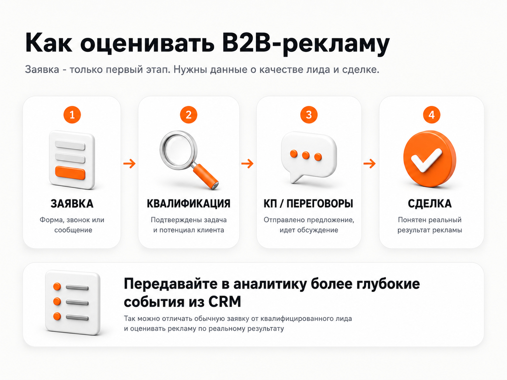

Блог о платном трафике
Яндекс Директ для B2B: как получать целевые заявки в сложных нишах
Яндекс Директ для B2B может хорошо работать и в производстве, и в оптовых продажах, и в сложных услугах с высоким чеком. Но механика здесь сильно зависит от спроса. В одной нише почти весь результат дает поиск, в другой прямых запросов слишком мало и основной объем приходится получать через РСЯ и автоматические кампании.
Поэтому я не начинаю B2B-проект с вопроса «какую кампанию запустить». Сначала смотрю, как клиент ищет решение, кто принимает решение о покупке, насколько длинный цикл сделки, какие заявки считаются целевыми и можно ли связать рекламу с CRM.
Главная задача - получить не максимальное количество форм, а поток обращений, которые могут дойти до переговоров и сделки.

Чем реклама B2B отличается от массового B2C
В потребительских нишах путь часто короткий: человек увидел предложение, сравнил несколько вариантов и сделал заказ. В B2B между первым кликом и деньгами может быть несколько этапов.
Например, потенциальный клиент:
- изучает поставщиков;
- запрашивает характеристики и условия;
- согласовывает решение внутри компании;
- получает коммерческое предложение;
- обсуждает договор;
- возвращается к вопросу через несколько недель.
В дорогих услугах решение могут принимать собственник, директор, снабженец, юрист, инженер или финансовый специалист. Один человек ищет подрядчика, другой проверяет условия, третий утверждает оплату.
Из-за этого оценивать рекламу только по кликам и первичным заявкам опасно. Нужна связь между Директом, Метрикой и CRM, чтобы понимать качество обращений.
Когда Яндекс Директ подходит для B2B
Директ особенно логичен, когда у аудитории уже есть задача, которую она пытается решить через поиск.
Например:
- найти производителя или подрядчика;
- заказать оборудование;
- найти оптового поставщика;
- получить юридическую или техническую услугу;
- организовать производство;
- заказать расчет;
- подобрать решение под конкретные требования.
Сам Яндекс относит B2B и компании без привязки к физической точке к типам бизнеса, для которых Директ подходит как инструмент получения переходов, заявок и звонков.
Но наличие B2B-аудитории еще не означает, что основной канал обязательно будет поисковым. Если прямой спрос слабый, люди могут вообще не формулировать название услуги. Тогда приходится работать с более ранним спросом через РСЯ, Мастер кампаний, ретаргетинг и аудитории.
Поиск или РСЯ для B2B
Это один из главных вопросов, и универсального ответа здесь нет.
Что такое РСЯ и чем она отличается от поиска я разбирал отдельно. Для B2B различие особенно заметно.
| Ситуация | Что чаще имеет смысл тестировать первым |
|---|---|
| Клиент уже ищет конкретную услугу или продукт | Поиск |
| Есть узкие профессиональные запросы | Поиск |
| Прямого спроса мало | РСЯ и автоматические кампании |
| Нужно расширить объем за пределами поиска | РСЯ |
| Решение принимается долго | Поиск + ретаргетинг/РСЯ |
| Нужно вернуть посетителей сайта | РСЯ и сегменты Метрики |

Когда поиск дает основной результат
Хороший пример - юридический консалтинг. В этом проекте спрос появляется в момент конкретной обязательной задачи: публикация на Федресурсе, регистрация в Роскомнадзоре, категорирование КИИ и другие профильные услуги.
Около 99% лидов там приходит с поиска. Баннерная реклама почти не дает заявок, потому что пользователю сложно продать подобную услугу заранее. Он начинает искать решение тогда, когда задача уже возникла.
Похожая логика была в проекте по организации швейного производства. При ограниченном бюджете основной упор сделали на поиск. Он давал наиболее горячий трафик и заявки примерно по 1500 ₽. В этой нише клиент осознанно ищет подрядчика, фабрику или организацию пошива.
Когда РСЯ сильнее поиска
Обратный пример - выкуп акций с чеком в несколько миллионов рублей. Прямого поискового спроса почти нет. Люди редко вводят точное название услуги, даже если потенциально готовы ею воспользоваться.
Основной объем там дали РСЯ и Мастер кампаний. По отслеживаемым целям стоимость обращения была около 4000-4200 ₽, а с учетом дополнительных точек контакта реальная стоимость составляла примерно 2500 ₽.
Еще один пример - фабрика детской одежды. Реклама была разделена на пошив под заказ и продажу готовой продукции оптом. Основной объем заявок дала РСЯ - около $4 за лид. Поиск по пошиву тоже работал, но стоил примерно $13 за обращение.
Вывод простой: выбор между поиском и РСЯ зависит от того, как выглядит спрос в конкретной нише. Сам ярлык B2B ничего не решает.
Как собирать семантику для B2B
В сложных нишах частотность часто низкая, а формулировки сильно отличаются от массового спроса.
Я обычно рассматриваю несколько уровней запросов.
Прямые коммерческие запросы
Это запросы, где человек уже ищет продукт или подрядчика:
- производство одежды оптом;
- заказать промышленное оборудование;
- юридический консалтинг для бизнеса;
- поставщик светодиодного оборудования;
- оптовый поставщик продуктов.
Они ближе всего к покупке, но их может быть мало.
Запросы по задаче
Человек может искать не название услуги, а способ решить проблему.
Например, предприниматель не знает, что ему нужна конкретная услуга по организации производства. Он ищет фабрику, пошив партии, запуск бренда одежды, подбор производства или расчет себестоимости.
Такие запросы часто расширяют охват, но требуют более точной посадочной страницы.
Отраслевые и профессиональные формулировки
B2B-клиенты используют собственную терминологию. Снабженец, инженер и собственник могут искать один и тот же продукт разными словами.
Поэтому семантику нельзя собирать только по одному очевидному запросу. Нужны реальные поисковые формулировки, запросы из статистики после запуска и постоянная чистка нерелевантного трафика.
Посадочная страница должна отвечать на задачу сегмента
В B2B особенно плохо работает страница «обо всем сразу».
Если компания занимается несколькими направлениями, логичнее вести разные рекламные группы на отдельные страницы или хотя бы на самостоятельные блоки с конкретным предложением.
В кейсе фабрики детской одежды были сделаны два отдельных лендинга:
- Пошив детской одежды на заказ оптом.
- Продажа готовой продукции оптом.
Это позволило не смешивать две разные аудитории и точнее связывать объявление с предложением.
Подробнее о том, каким должен быть лендинг для Яндекс Директа, я писал отдельно.
Для B2B-страницы обычно полезны:
- четкое описание продукта или услуги;
- кому подходит предложение;
- минимальные объемы или ограничения, если они есть;
- география работы;
- сроки;
- этапы сотрудничества;
- примеры проектов;
- кейсы;
- форма запроса расчета или консультации;
- контакты для быстрого диалога.
Чем дороже и сложнее продукт, тем сильнее сайт влияет на качество лида. Пользователь должен получить достаточно информации, чтобы передать страницу коллеге или руководителю и вернуться к ней позже.
Объявления: меньше общих обещаний, больше конкретики
Для B2B я стараюсь писать объявления ближе к реальной задаче клиента.
Вместо общего «качественное производство» полезнее показать:
- что именно производит компания;
- с какими объемами работает;
- в каких регионах;
- какие сроки или этапы возможны;
- можно ли получить расчет;
- есть ли кейсы;
- под какие типы бизнеса подходит решение.
Если предложение сложное, объявление не обязано продавать сделку сразу. Его задача - привести подходящего человека на страницу, где он поймет, что компания решает его задачу.
Аналитика B2B: заявка еще не означает результат
Это ключевой момент для длинного цикла сделки.
В рекламном кабинете можно увидеть форму, звонок или другое целевое действие. Но Директ сам по себе не знает, что произошло дальше:
- заявка целевая или случайная;
- есть ли у компании нужный бюджет;
- дошел ли контакт до коммерческого предложения;
- состоялась ли встреча;
- была ли сделка.
Поэтому B2B-рекламу желательно связывать с CRM.
Яндекс позволяет передавать офлайн-конверсии из CRM и использовать их для анализа и оптимизации. Для сопоставления могут использоваться ClientID, телефон или email. Это дает возможность передавать в аналитику более поздние события, которые происходят уже после заявки.

Если данных достаточно, полезно разделять этапы:
- Получена заявка.
- Лид квалифицирован.
- Отправлено коммерческое предложение.
- Назначена встреча или следующий этап.
- Сделка состоялась.
При этом не нужно пытаться сразу оптимизировать кампанию по событию, которое происходит раз в несколько месяцев. Цель для алгоритма должна соответствовать реальному объему данных.
О том, как считать конверсию в Яндекс Директе, есть отдельный материал.
Как оценивать экономику рекламы
В B2B высокая стоимость лида сама по себе не означает, что реклама плохая.
Если контракт стоит несколько миллионов рублей, заявка по несколько тысяч может быть выгоднее, чем дешевый лид в массовой нише. Считать нужно от экономики сделки.
Базовая логика:
Допустимая стоимость клиента → конверсия из лида в продажу → допустимая стоимость лида.
Например, если бизнес понимает, сколько прибыли приносит средний клиент и какая доля лидов превращается в сделки, можно рассчитать предельную цену обращения.
Но я бы не брал чужие «средние CPL по рынку» как ориентир для решения о запуске. В B2B слишком сильно отличаются чек, маржа, география, качество отдела продаж, спрос и длительность сделки.
Что показывают реальные B2B-кейсы
Выкуп акций - высокий чек и почти отсутствующий прямой спрос
Кейс выкупа акций показывает ситуацию, где попытка строить продвижение только на поисковых запросах дала бы слишком маленький объем.
Основная модель - РСЯ и Мастер кампаний. При рекламном бюджете около 300 000 ₽ в неделю реальная стоимость обращения с учетом дополнительных точек контакта была около 2500 ₽.
Организация швейного производства - горячий поиск при длинной сделке
В кейсе по организации швейного производства основной результат пришел с поиска. Стоимость заявки держалась в диапазоне 1500-3000 ₽, а наиболее стабильный поисковый трафик давал лиды примерно по 1500 ₽.
При этом цикл сделки длинный, поэтому оценка рекламы по продажам требует времени.
Фабрика детской одежды - разделение направлений и сильная РСЯ
В кейсе фабрики детской одежды два направления были разделены по посадочным страницам.
РСЯ дала основной объем заявок примерно по $4. Поиск по пошиву - около $13. Продажа готовой продукции со склада оказалась заметно дороже - около $40 за лид.
Одна и та же компания внутри одного рекламного кабинета получила три разных экономики в зависимости от продукта и канала.
Юридический консалтинг - спрос возникает в конкретный момент
Юридический консалтинг показывает противоположную модель. Здесь почти вся эффективность сосредоточена в поиске, потому что клиент приходит за решением уже возникшей обязательной задачи.
В проекте с бюджетом более 18 млн рублей в год стоимость лида меняется в зависимости от услуги: простые лид-магниты могут давать обращения по 150-300 ₽, сложные направления стоят значительно дороже.
Оптовый суперфуд - рост без увеличения бюджета
В кейсе оптовой продажи суперфуда задача была не увеличить бюджет, а эффективнее использовать существующий.
При расходах около 102 000 ₽ стоимость лида снизили с 1300 до 600 ₽, а количество обращений выросло примерно вдвое.
Этот кейс хорошо показывает, что в B2B результат зависит не только от объема спроса. Большое значение имеет то, как распределяется бюджет между кампаниями и запросами.
Типичные ошибки в Яндекс Директе для B2B
Считать все заявки одинаковыми
Форма от студента, запрос от малого бизнеса и обращение от крупной компании могут иметь совершенно разную ценность. Если CRM этого не различает, оптимизация становится неточной.
Делать одну страницу на все направления
Чем больше разница между продуктами и аудиториями, тем хуже работает универсальная посадочная.
Слишком сильно дробить кампании
Узкая семантика не означает, что нужно создать десятки маленьких кампаний. Если каждая получает мало трафика и конверсий, алгоритмам сложнее обучаться.
Оценивать рекламу слишком рано
Поисковые запросы, качество трафика и первичные лиды можно анализировать быстро. Но реальная окупаемость B2B может проявляться только после прохождения сделки.
Смотреть только на CPL
Дешевый лид не всегда полезный. Нужно учитывать квалификацию, коммерческие предложения, сделки и итоговую прибыль.
Запускать рекламу без нормальной аналитики
До старта должны быть настроены Метрика, цели, передача источника в CRM и понятные статусы лидов. Если реклама уже работает, полезно начать с аудита Яндекс Директа.
Как я выстраиваю запуск B2B-рекламы
Обычно работа идет в таком порядке:
- Разбираю продукт, чек, географию и цикл сделки.
- Смотрю, как формируется спрос и какие запросы используют потенциальные клиенты.
- Проверяю сайт и разделяю разные предложения.
- Настраиваю Метрику и цели.
- Формирую поисковую семантику и гипотезы для РСЯ.
- Запускаю кампании с учетом реального бюджета.
- Анализирую поисковые запросы, площадки, аудитории и качество лидов.
- Перераспределяю бюджет в работающие связки.
- При возможности связываю рекламу с CRM и передаю более глубокие конверсии.
Общий процесс настройки Яндекс Директа подробно описан в отдельной статье.
Частые вопросы
Подходит ли Яндекс Директ для B2B с очень низкой частотностью?
Да, если ценность сделки оправдывает рекламу. При низком прямом спросе поиск можно дополнять РСЯ, автоматическими кампаниями, ретаргетингом и более широкими запросами по задаче.
Что лучше для B2B - поиск или РСЯ?
Зависит от спроса. Если клиент уже ищет конкретное решение, поиск часто дает наиболее горячие обращения. Если прямых запросов мало, РСЯ может давать основной объем. Это видно и по реальным кейсам выше.
Сколько времени нужно, чтобы оценить рекламу?
Первые выводы по качеству трафика и заявок можно делать достаточно быстро. Вывод по окупаемости должен учитывать реальный цикл сделки. Если продажа занимает несколько месяцев, нельзя оценивать канал только по выручке первой недели.
Нужна ли CRM для запуска?
Запустить рекламу можно и без CRM. Но в B2B она сильно улучшает качество аналитики, потому что позволяет отличать обычную заявку от квалифицированного лида и отслеживать дальнейший путь до сделки.
Итог
Яндекс Директ для B2B работает лучше всего, когда рекламная структура повторяет реальную модель спроса бизнеса.
Если спрос сформирован, можно делать упор на поиск. Если прямых запросов мало, подключать РСЯ и автоматические кампании. Для разных направлений нужны разные посадочные страницы, а результат лучше оценивать по качеству лидов и этапам сделки, а не только по кликам и формам.
У меня собраны B2B-проекты с совершенно разной механикой: производство, оптовые продажи, юридический консалтинг, сложные услуги с высоким чеком. Посмотреть их можно в разделе кейсов и на главной странице.
Если нужно настроить или переработать рекламу под конкретную B2B-нишу, я сначала разбираю спрос, сайт, аналитику и экономику проекта, а уже после этого определяю структуру кампаний.